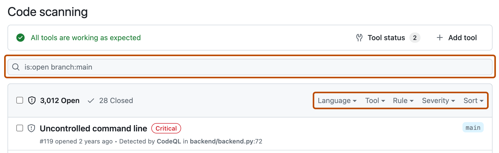
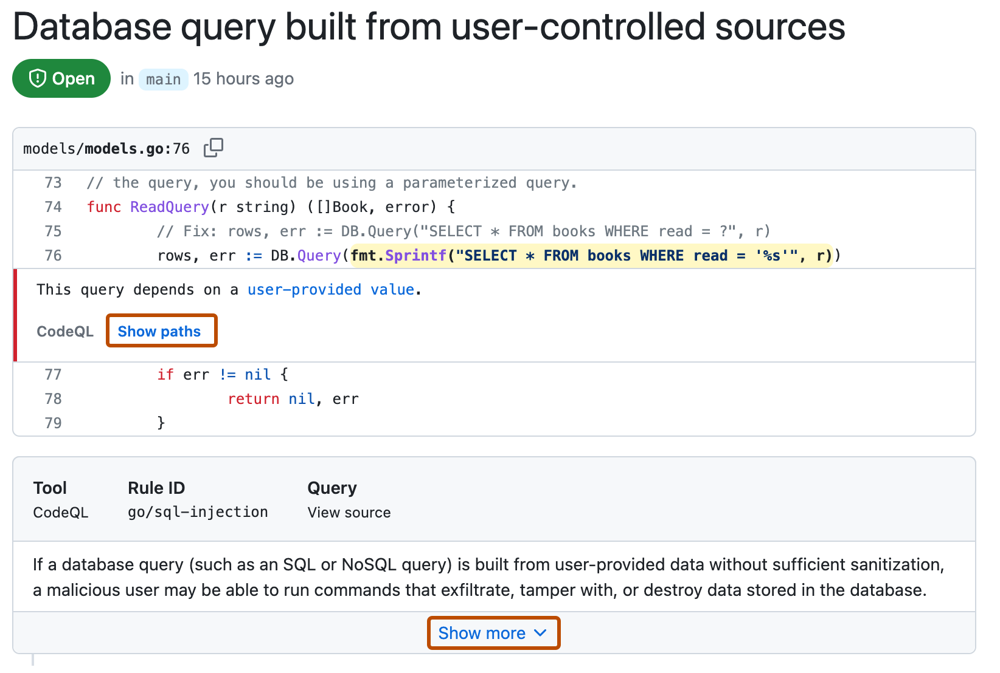
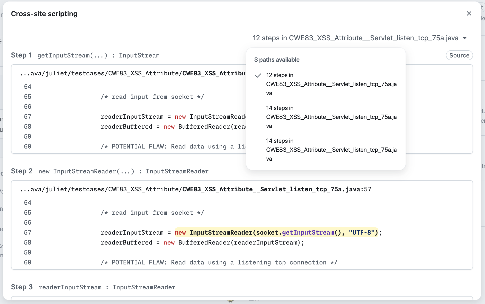
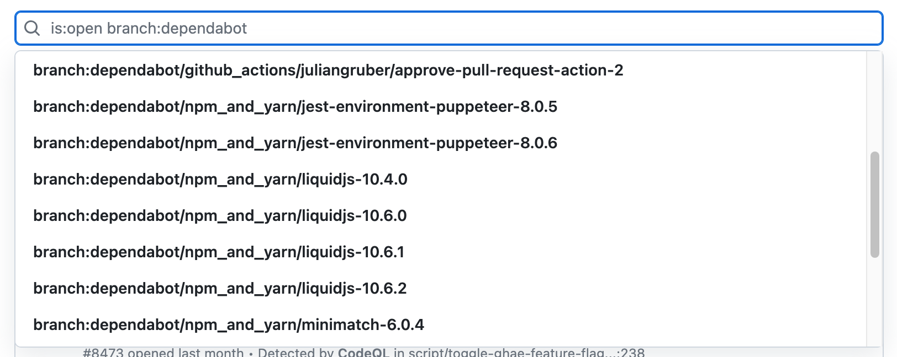
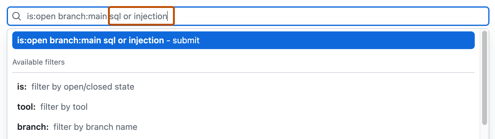

From the security view, you can explore and evaluate alerts for potential vulnerabilities or errors in your project's code.
Anyone with read permission for a repository can see code scanning annotations on pull requests. For more information, see Triaging code scanning alerts in pull requests.
You need write permission to view a summary of all the alerts for a repository on the Security and quality tab.
By default, the code scanning alerts page is filtered to show alerts for the default branch of the repository only.
On GitHub, navigate to the main page of the repository.
Under the repository name, click the Security and quality tab. If you cannot see the " Security and quality" tab, select the dropdown menu, and then click Security and quality.
In the left sidebar, click Code scanning.
Optionally, use the free text search box or the dropdown menus to filter alerts. For example, you can filter by the tool that was used to identify alerts. Linked GitHub issues appear alongside their corresponding alerts in the list view.

Under "Code scanning," click the alert you'd like to explore to display the detailed alert page.
The status and details on the alert page only reflect the state of the alert on the default branch of the repository, even if the alert exists in other branches. You can see the status of the alert on non-default branches in the Affected branches section on the right-hand side of the alert page. If an alert doesn't exist in the default branch, the status of the alert will display as "in pull request" or "in branch" and will be colored grey. The Development section shows linked branches and pull requests that will fix the alert.
Optionally, if the alert highlights a problem with data flow, click Show paths to display the path from the data source to the sink where it's used. The path view shows each step in the data flow as a numbered list, from the point where user-provided data enters the code (the source) to the point where it's used in a potentially unsafe operation (the sink).

Some alerts identify multiple paths through the code that could trigger the same vulnerability. When an alert has multiple paths, a dropdown appears above the path view showing the number of paths available. You can select each path from the dropdown to review it individually.

Alerts from CodeQL analysis include a description of the problem. Click Show more for guidance on how to fix your code.
Optionally, assign the alert to someone to fix using the Assignees control shown on the right, see Assigning alerts.
For more information, see About code scanning alerts.
Note
You can see information about when code scanning analysis last ran on the tool status page. For more information, see Use the tool status page for code scanning.
For code scanning alerts from CodeQL analysis, you can use security overview to see how CodeQL is performing in pull requests in repositories where you have write access across your organization, and to identify repositories where you may need to take action. For more information, see CodeQL pull request alert metrics.
You can filter the alerts shown in the code scanning alerts view. This is useful if there are many alerts as you can focus on a particular type of alert. There are some predefined filters and a range of keywords that you can use to refine the list of alerts displayed.
When you select a keyword from either a drop-down list, or as you enter a keyword in the search field, only values with results are shown. This makes it easier to avoid setting filters that find no results.

If you enter multiple filters, the view will show alerts matching all these filters. For example, is:closed severity:high branch:main will only display closed high-severity alerts that are present on the main branch. The exception is filters relating to refs (ref, branch and pr): is:open branch:main branch:next will show you open alerts from both the main branch and the next branch.
Please note that if you have filtered for alerts on a non-default branch, but the same alerts exist on the default branch, the alert page for any given alert will still only reflect the alert's status on the default branch, even if that status conflicts with the status on a non-default branch. For example, an alert that appears in the "Open" list in the summary of alerts for branch-x could show a status of "Fixed" on the alert page, if the alert is already fixed on the default branch. You can view the status of the alert for the branch you filtered on in the Affected branches section on the right side of the alert page.
You can prefix the tag filter with - to exclude results with that tag. For example, -tag:style only shows alerts that do not have the style tag.
You can use the "Only alerts in application code" filter or autofilter:true keyword and value to restrict results to alerts in application code. For more information about the types of code that are automatically labeled as not application code, see About code scanning alerts.
You can search the list of alerts. This is useful if there is a large number of alerts in your repository, or if you don't know the exact name for an alert for example. GitHub performs the free text search across:
| Supported search | Syntax example | Results |
|---|---|---|
| Single word search | injection |
Returns all the alerts containing the word injection |
| Multiple word search | sql injection |
Returns all the alerts containing sql or injection |
| Exact match search (use double quotes) |
"sql injection" |
Returns all the alerts containing the exact phrase sql injection |
| OR search | sql OR injection |
Returns all the alerts containing sql or injection |
| AND search | sql AND injection |
Returns all the alerts containing both words sql and injection |
Tip

You can audit the actions taken in response to code scanning alerts using GitHub tools. For more information, see Auditing security alerts.